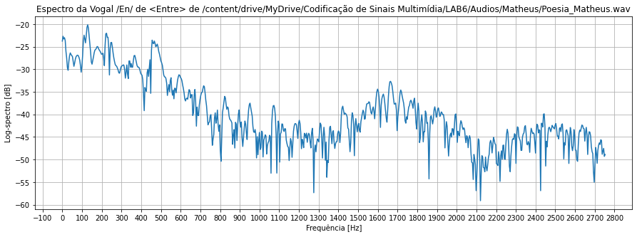

PDS Voz
Codificação de Sinais Multimídia - Laboratório 6
Primeiramente, os trabalhos com o Google Colab e o OpenCV, Notebook foram iniciados. Entre os principais objetivos temos: Gravar Arquivos de Áudio com dígitos, números gerais, texto lido e poesia; Leitura de Arquivos de Áudio e janelamento; Cálculo das Energias de Tempo Curto; Cálculo dos Espectrogramas; Determinação do Pitch, da Frequência Fundamental e das Formantes ( f1 a f4 ) de Algumas Vogais; Determinação de fonemas surdos, sonoros, consoantes gerais e plosivos.
Matheus
Como descrito no objetivo, cada integrante gravou os arquivos de áudio com dígitos, números gerais, texto lido e poesia. Em seguida, foi realizada a leitura e janelamento destes arquivos.
Digitos
Arquivo de Áudio


Voz Falada
Arquivo de Áudio


Poesia Declamada
Arquivo de Áudio
